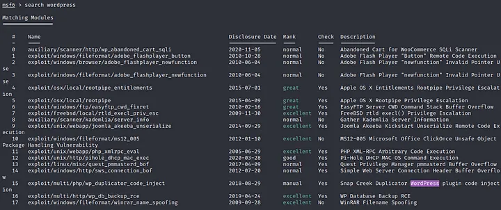

COMO METASPLOIT FUNCIONA?
O QUE É?
Metasploit é um framework (estrutura) para desenvolver e executar exploits em uma máquina de destino remota (que será hackeada/explorada/testada), muito utilizado por ethical hackers e profissionais de cybersec. Foi originalmente desenvolvido como uma ferramenta de rede portátil em 2003 por H. D. Moore e, desde então, evoluiu para uma ferramenta de segurança cibernética completa usada por testadores de penetração e administradores de TI em todo o mundo.
COMO INSTALAR
A ferramenta já vem nativamente instalada no Kali Linux. Caso você possua outra distribuição, abra o terminal e execute os seguintes comandos: Em distribuições Linux baseadas em Ubuntu ou Debian:
apt install metasploit-framework
Para CentOS/Redhat:
yum install metasploit-framework
Módulos do Metasploit Framework
Exploits: Módulos que contêm código que pode ser usado para explorar uma vulnerabilidade em um sistema de destino, a fim de obter acesso ou executar código arbitrário; Payloads: Módulos contêm código que é executado na máquina destino (“vítima”) após uma exploração. Os payloads podem ser usados para estabelecer um acesso persistente no sistema de destino ou para executar tarefas específicas, como instalar um rootkit ou exfiltrar dados; Auxiliares: Esses módulos fornecem uma ampla gama de funcionalidades além da simples exploração, como varredura de portas, mapeamento de rede e análise de vulnerabilidade; Encoders: Esses módulos são usados para codificar payloads para contornar os controles de segurança ou evitar a detecção.
Componentes do Metasploit
msfconsole — é a interface via CLI para executar e desenvolver os exploits msfdb — o metasploit permite a utilização de um banco de dados para armazenamento de todas as informações coletadas na etapa de Recon msfvenom — ferramenta que cria payloads para que sejam injetados na máquina vítima e gerem alguma forma de acesso meterpreter — é um payload sofisticado que possui diversas funcionalidades para comunicação com a máquina destino, injetar e coletar arquivos, dentre outros
Utilizando na prática
Para ilustrar o uso da ferramenta de forma rápida, vamos acompanhar este breve passo a passo, supondo que temos a missão de explorar um servidor web com Wordpress, comumente explorada em CTFs. Primeiro devemos carregar o Metasploit no terminal:
msfconsole #carrega o metasploit
msfconsole -q #carrega o metasploit de forma quieta, sem banners
Vamos agora buscar por módulos disponíveis dentro da ferramenta, basta digitar search *nome da tecnologia ou versão ou vulnerabilidade* . Neste caso queremos explorar um servidor Wordpress:Conforme evidenciado no print, é possível verificar que cada módulo tem uma classificação (coluna rank) de manual, normal, bom e excelente, classificando por nível de eficácia do módulo. Digamos que a vítima seja vulnerável ao exploit wp_admin shell upload, identificado na lista acima pelo número 20 ou pelo nome completo exploit/unix/webapp/wp_admin_shell_upload . Para usar o exploit desejado, devemos usar o comando use:

use exploit/unix/webapp/wp_admin_shell_upload
ou
use 20